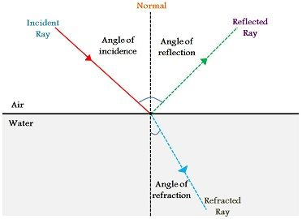
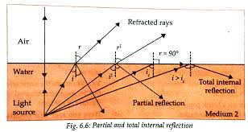
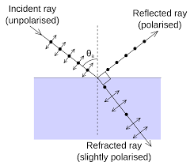
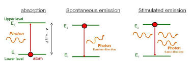
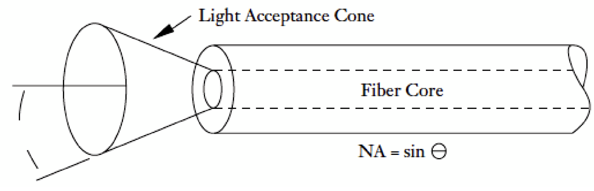

Key Concepts in Optics and Laser Physics
1. Reflection & Refraction
Reflection: When light strikes a reflective surface, it bounces back. The angle of incidence (θ₁) equals the angle of reflection (θ₂).
Refraction: The bending of light when it passes from one medium to another due to a change in speed.
Formula: n₁ sin(θ₁) = n₂ sin(θ₂)
2. Snell's Law
Snell's Law describes how light bends when moving between different media. It relates the angles of incidence and refraction to the refractive indices of the media.
Formula: n₁ sin(θ₁) = n₂ sin(θ₂)
3. Total Internal Reflection (TIR)
TIR occurs when light attempts to pass from a denser medium to a less dense one at an angle greater than the critical angle.
Critical Angle Formula: θc = sin⁻¹(n₂ / n₁)
4. Brewster's Angle
Brewster's Angle is the angle at which light with a particular polarization is perfectly transmitted through a transparent surface without any reflection.
Formula: θB = tan⁻¹(n₂ / n₁)
5. Stimulated & Spontaneous Emission
Spontaneous Emission: An excited atom releases a photon naturally without external influence.
In this case, one of the electron is not in the excited. Spontaneously, the atom emits a photon with an energy equals to the difference in energy between the energy when the electron is in the excite state and the energy of the level when the electron is in the relaxed state (lower energy state). During this emission the electron jumps down to the lower energy state. The atoms give up energy which is carried by the emitted photon and it is left unexcited. On the other side, the difference in energy between the two atomic states involved. However, there is not a prefer direction of motion for the emitted photon; in random.
Stimulated Emission: An external photon stimulates the release of another photon, resulting in coherent light (used in lasers).
When a photon with the same energy as the difference between two atomic levels reaches the atom and the corresponding electron to those levels is in the excited state, the electron jumps down to the lower energy state emitting an additional photon. After this process, two photons are emerging from the atom for every incident photon that interacts with the atom inducing the emission.
6. Numerical Aperture (NA)
NA measures the range of angles over which the system can collect light. It's crucial in fiber optics and microscopy.
Formula: NA = n × sin(θ)
Thus, if a cone of light is incident on one end of the fiber, it will be guided through it provided the semi angle of the cone is less than im (Acceptance Angle)
7. Cutoff Parameter
The cutoff parameter defines the conditions under which light can propagate in optical fibers.
Formula: V = (π × d × NA) / λ
8. Attenuation
Attenuation refers to decrease/loss in the light power during propagation along the optical fiber.
Light travelling in an optical fibre loses power over distance. The loss of power depends on the wavelength of the light and on the propagating material. For silica glass, the shorter wavelengths are attenuated the most.
9. Number of Modes
The number of modes describes the distinct patterns of light propagation in an optical fiber.
Formula: M = q x V² / (2 ( 2 + q )) where V is the normalized frequency.
10. Power Loss in Optical Fibers
Fiber loss is the ratio of power at the output end of a fiber P(out) to the power launched into the fiber P(in).
Power loss in fibers occurs due to absorption, scattering, and radiation.
Formula: P = P₀ × 10^(-αL/10)